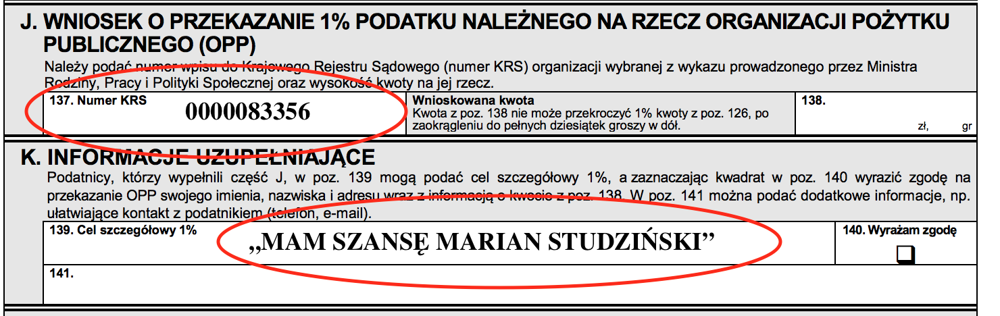

Witaj
Nazywam się Marian Studziński. Mam 56 lat. Jestem żonaty, mam dwóch dorosłych synów. Ukończyłem elektrotechnikę na ATR Bydgoszcz (obecnie UTP Bydgoszcz). 15 lat temu zaczął się mój dramat. Zachorowałem na stwardnienie rozsiane. Od tego czasu mój stan zdrowia systematycznie się pogarsza. Obecnie poruszam się na wózku inwalidzkim. Cały czas intensywnie uczęszczam na rehabilitację, co niestety wiąże się z wysokimi kosztami. Jeśli możesz, to proszę przekaż 1% podatku na moje subkonto Polskiego Towarzystwa Stwardnienia Rozsianego. Obiecuję, że każdą złotówkę przeznaczę na ratowanie mojego zdrowia. Bardzo dziękuję.
1% Podatku
Polskie Towarzystwo Stwardnienia Rozsianego
KRS: 0000083356
Cel szczegółowy 1%: „Mam szansę Marian Studziński"
